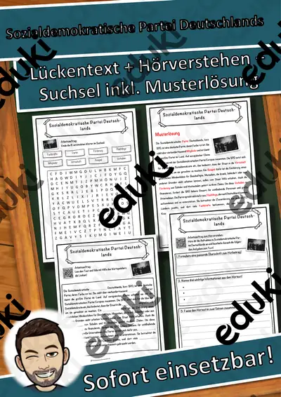

Bundestagswahl und Parteien: Arbeitsblätter für Klasse 5–10 (Politik/Sozialkunde)
Wahlen und Parteien sind Kern der politischen Bildung. Die Lernenden lernen das Wahlsystem kennen, vergleichen Programme und üben, Informationen kritisch zu prüfen.
Als roter Faden eignen sich Erststimme und Zweitstimme, Parteien und Wahlprogramme; Fünf-Prozent-Hürde, Landtagswahl und Wahlbeteiligung lassen sich je nach Klassenstufe zuschalten.
Je nach Bundesland variiert die genaue Einordnung; üblich ist das Fach Politik/Sozialkunde in der Sekundarstufe I (Klasse 5–10). Die Jugendlichen erklären das Wahlverfahren und vergleichen Parteiprogramme sachlich.
Für den Einstieg in Bundestagswahl und Parteien bieten sich Aufgaben zu Erststimme und Zweitstimme an, zum Üben solche zu Parteien und Wahlprogramme, zur Wiederholung vor einer Lernkontrolle ein Blick auf Wahlbeteiligung. Die Lösungen liegen bei, sodass im Unterricht niemand nachschlagen muss. Leistungsstarke und schwächere Lesende erhalten über die Lesespurgeschichten Texte in drei Stufen.
32 passende Materialien stehen bereit, etwa Materialpaket Wahlprogramme zur Bundestagswahl, Die Bundestagswahl und Sozialdemokratische Partei Deutschlands. Vertreten sind 1 Lesespurgeschichte und 10 Lückentexte mit Hörverstehen; die Stufen reichen über Klasse 5–10. Ein Parteien-Steckbrief nach festem Raster hält die Darstellung neutral und vergleichbar.
Das gehört zum Thema
Passende Arbeitsblätter und Materialpakete

Materialpaket Wahlprogramme zur Bundestagswahl 2025 #demokratiestärken

Die Bundestagswahl – Lesespurgeschichte mit Rätselaufgaben (Klasse 9)

Sozialdemokratische Partei Deutschlands Lückentext mit Wortspeicher Hörverstehen und Suchsel
Präsidentschaftswahl in den USA 2024 Lückentext mit Wortspeicher Hörverstehen und Suchsel
Präsidentschaftswahl in den USA 2020 Lückentext mit Wortspeicher Hörverstehen und Suchsel

Republikanische Partei (USA) Lückentext mit Wortspeicher Hörverstehen und Suchsel

Partei Lückentext mit Wortspeicher Hörverstehen und Suchsel

Grünliberale Partei (Schweiz) Lückentext mit Wortspeicher Hörverstehen und Suchsel

Freie Demokratische Partei Lückentext mit Wortspeicher Hörverstehen und Suchsel

Bundestagswahl 2025 Lückentext mit Wortspeicher Hörverstehen und Suchsel

Bundestagswahl 2021 Lückentext mit Wortspeicher Hörverstehen und Suchsel

Demokratische Partei (USA) Lückentext mit Wortspeicher Hörverstehen und Suchsel

Bundestagswahl - Wahlprogramm der SPD

Bundestagswahl - Wahlprogramm der Partei Die Linke

Bundestagswahl - Wahlprogramm der Partei BSW

Bundestagswahl - Wahlprogramm der FDP

Bundestagswahl - Wahlprogramm der CDU-CSU

Bundestagswahl - Wahlprogramm der AFD

Bundestagswahl - Wahlprogramm Bündnis 90 - Die Grünen

Steckbrief Bündnis Sahra Wagenknech - Vernunft und Gerechtigkeit (BSW)

Landtagswahl Hessen 2023 - Steckbriefe Parteien

Landtagswahl Bayern 2023 - Steckbriefe Parteien

Landtagswahl Nordrhein-Westfalen 2022 - Steckbriefe Parteien

Landtagswahl Schleswig-Holstein 2022 - Steckbriefe Parteien
Weitere 8 Materialien zum Thema im Material-Finder.
Häufige Fragen
Für welche Klassenstufe passen die Arbeitsblätter zu Bundestagswahl und Parteien?
Die 32 Materialien zu diesem Thema sind für Klasse 5–10 ausgelegt, die meisten davon für Klasse 6. Einzelne Titel lassen sich mit Anpassung auch eine Stufe darunter oder darüber einsetzen.
Welche Inhalte decken die Materialien zu Bundestagswahl und Parteien ab?
Inhaltlich reicht die Auswahl von Erststimme und Zweitstimme über Parteien und Wahlprogramme bis zu Landtagswahl; Details stehen bei den einzelnen Materialien.
Wie setze ich Bundestagswahl und Parteien im Unterricht ein?
Ein Parteien-Steckbrief nach festem Raster hält die Darstellung neutral und vergleichbar. Danach genügt meist ein Material als Einstieg und eines zum Üben.
Mehr Material nach Fach und Klasse
- Alle Materialien Politik/Sozialkunde
- Arbeitsblätter Politik/Sozialkunde Klasse 6
- Arbeitsblätter Politik/Sozialkunde Klasse 7
- Arbeitsblätter Politik/Sozialkunde Klasse 8
- Arbeitsblätter Politik/Sozialkunde Klasse 9
- Arbeitsblätter Politik/Sozialkunde Klasse 10
- Unterrichtsmaterial Klasse 5
- Unterrichtsmaterial Klasse 6
- Unterrichtsmaterial Klasse 7
- Unterrichtsmaterial Klasse 8
- Unterrichtsmaterial Klasse 9
- Unterrichtsmaterial Klasse 10
Verwandte Lehrplanthemen
- Bundespräsident, Kanzler und Regierung (Politik/Sozialkunde, Klasse 5–10)
- Europäische Union (Politik/Sozialkunde, Klasse 5–10)
- Grundgesetz und Grundrechte (Politik/Sozialkunde, Klasse 5–10)
- Demokratie und politische Beteiligung (Politik/Sozialkunde, Klasse 3–10)